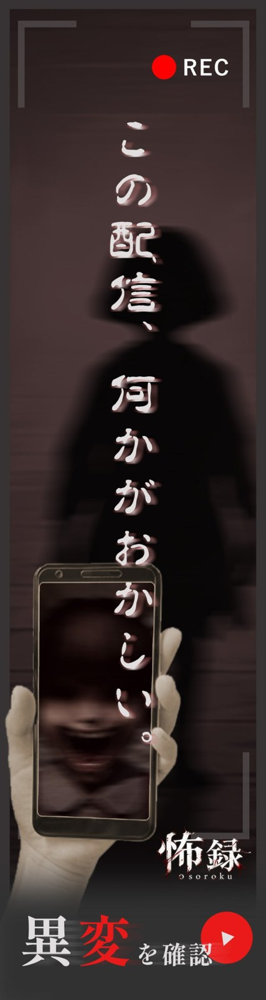
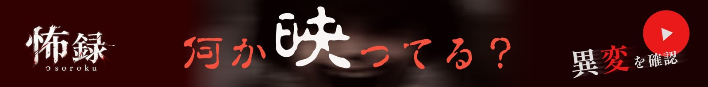
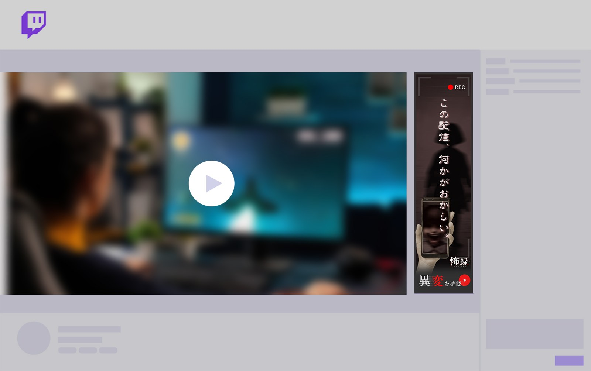
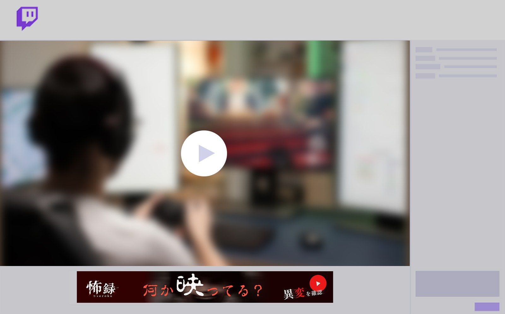
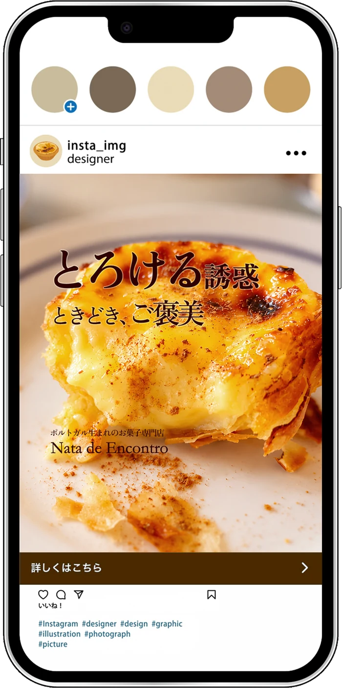
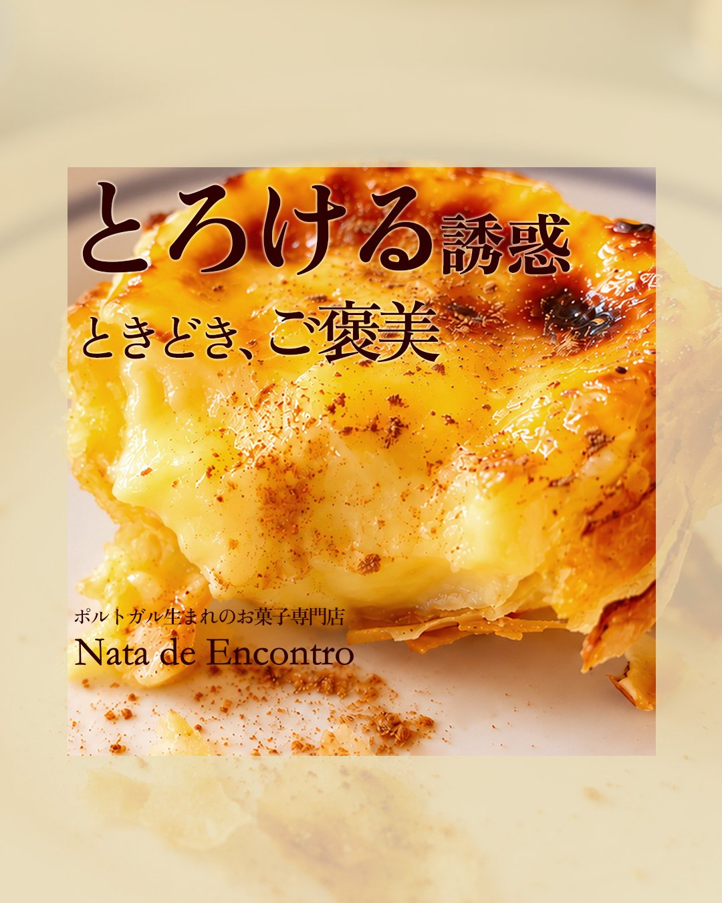
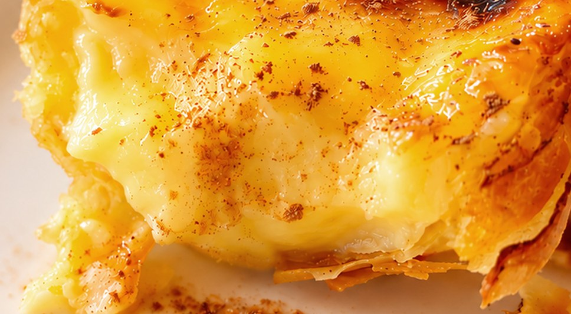

広告バナー
興味を生み、
サイトへの接点をつくる。
自主制作したWebサイト「怖録」「Nata de Encontro」の集客施策として、広告バナーを制作しました。それぞれのターゲットや媒体の閲覧環境を踏まえ、広告からサイトへの興味につながる表現を検討しました。（いずれも広告出稿を想定した自主制作です）
配信の中に、異変を紛れ込ませる。




Media媒体
既存のXでの情報発信に加え、新たな接点としてTwitch広告を想定しました。ゲーム実況の視聴者や配信者が集まる環境に着目し、ホラーゲームの世界観と親和性のある広告表現を検討しました。
Purpose目的
配信視聴中に広告を目にしたユーザーの好奇心を刺激し、作品への興味を喚起することを目的としました。日常の映像に潜む異変を視覚的な仕掛けとして取り入れ、違和感の正体を確かめたくなる表現を目指しました。
Designデザイン
黒・赤・白を基調に、作品の不穏な世界観を表現。文字にはかすれや歪みを感じさせる書体を採用し、CTAには再生ボタンを想起させる意匠を取り入れました。
Vertical縦長
「配信に紛れ込む異変」をテーマに、人影とスマートフォン画面の違和感を演出。縦長の画面構成を生かし、上部のコピーから不穏なビジュアル、CTAへと視線を誘導する構成としました。
Horizontal横長
限られた表示領域でも興味を引けるよう、「何か映ってる？」という問いかけを大きく配置。背景に潜む不気味な顔を視覚的な仕掛けとし、右端のCTAへ視線が流れる構成を意識しました。
「おいしそう」を「食べたい」に変える。


セーフゾーンにテキストを配置

食感やおいしさを想起させることで、
「食べたい」という気持ちを引き出す
Media媒体
商品の焼き色や質感を写真で訴求できる点に着目し、Instagramのフィード広告を想定しました。スイーツやカフェに関心のあるターゲットに向けて、視覚的に商品の魅力を伝える構成としています。
Purpose目的
ブランドの認知獲得と商品への興味喚起を目的に制作。広告からブランドサイトへ誘導し、商品ラインナップや店舗情報の閲覧につなげることを目指しました。
Targetターゲット
スイーツやカフェに関心のある20〜30代女性。日常の中で、気軽に楽しめるご褒美を求める人を想定しました。
Copyコピー
「とろける誘惑」でカスタードの濃厚な食感を想起させ、「ときどき、ご褒美」で日常の小さな贅沢を表現。商品の魅力と、自分へのご褒美として選びたくなる気持ちを結びつけました。
Visualビジュアル
エッグタルトの焼き色とカスタードの質感が伝わる写真を大きく配置し、商品に視線が集まる構成としました。文字色にはブラウン、書体には明朝体を採用し、ブランドサイトとの統一感を持たせています。